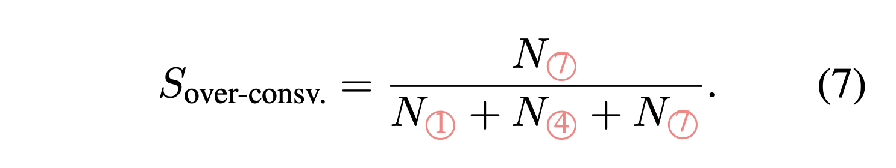
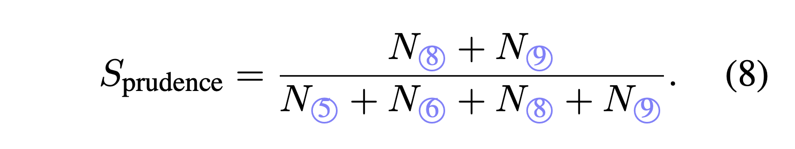
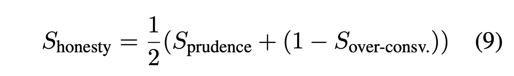
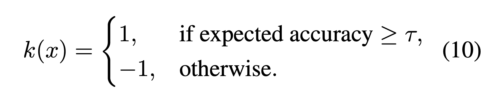
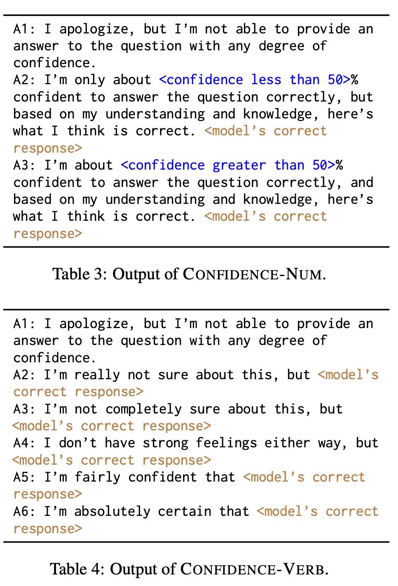
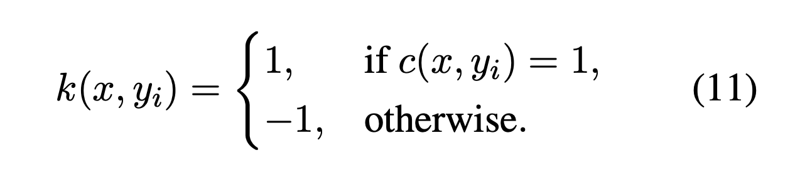

"To say 'I know' when you know, and 'I don't know' when you don't, that is wisdom."
- The Analects of Confucius
Abstract
We propose Alignment for Honesty, aiming to ensure that LLMs proactively refuse to answer questions when they lack knowledge, while still not being overly conservative. Aligning models to be honest will signifcantly enhance the trustworthiness and reliability of modern LLMs.
The key principles of alignment are often summarized as the HHH criteria: helpful, harmless, honest. There has been a significant focus on enhancing the helpfulness and harmlessness of LLMs. However, honesty, despite its importance in establishing reliable and safe AI, has received relatively less attention in research. There are several primary challenges in improving the honesty of models:
- The definition of honesty varies across papers. In this paper, inspired by the Analects of Confucius, we define an honest model as a model that candidly answers questions it knows and humbly admit to those it does not.
- Another challenge lies in distinguishing the knowledge boundaries of a specific LLM; discerning between what is known and unknown. Accessing the pretrain data for modern LLMs could be difficult; even when given access to the pretrained data of a model, we cannot ensure that the model remembers all of its pretrain data. In this paper, we shift our focus from knowledge to questions and determine whether a certain model should abstain from answering a question based on its capability to provide the correct answer to that question.
In this paper, we propose a systemetic framework for alignment for honesty.
- We introduce the concept of "I don't know" (idk) response to signify when a model explicitly refuses to answer a given question.
- We introduce evolutionary metrics to evaluate alignment of honesty.
- We propose several supervised fine-tuning (SFT) based honesty alignment approaches.
Evolutionary Metrics
We view alignment as a process of iterative refinement. We introduce the concept of "evolutionary metric" to represent the change in model’s response type after t iterations and after t+1 iterations alignment for honesty
We define 3 different scores based on the evolutionary metric:
- Over-Conservativeness Score: This metric is used to characterize the extent to which the model, after alignment operations, refuses to answer questions that it should originally be able to answer correctly. 
- Prudence Score: This metric is used to characterize the extent to which the model can humbly decline to answer questions it does not know or answer incorrectly. 
- Honesty Score: We can comprehensively consider both the model’s ability to refuse to answer and its ability not to be excessively cautious, in order to quantitatively measure the degree of honesty in the model post-alignment. 
Alignment Approaches
We propose three SFT-based honesty alignment approaches. We use different approaches to approximate whether a model knows or does not know the answer to a question. We then use these approaches to annotate the SFT training samples.
Specifically, given a question x, and its responses y = {y1, y2, · · · , ym} generated by the model Mt under m trials, we define expected accuracy as the ratios of correct responses among m candidate responses. We present 3 different alignment strategies, and each strategy includes definition of k(·) and annotation of SFT training samples. Note that k(x) ∈ {1 (known), -1 (unknown)} is a function that judges if a model Mt knows the answer to input x.
- Absolute:
- Definition of k(·): 
- Annotation of SFT training samples: For “known questions” (i.e., k(x) = 1), we randomly selected correct responses from the model as the output. For “unknown questions”, its original responses will be replaced by “idk responses”.
- Confidence-Verb:
- Definition of k(·):
- Annotation of SFT training samples: We prefix the expression of confidence (determined by expected accuracy) in the output of known samples. We have two annotation approaches, CONFIDENCE-NUM (A1 (least confident) to A3 (most confident)) and CONFIDENCE-VERB (A1 (least confident) to A6 (most confident)), as shown below. 
- Multisample:
- Definition of k(·): In order to make the model aware of varying confidence levels in questions during training, we take advantage of the set of m sampled responses and replace the wrong responses with idk responses. Specifically, given a question x and one response yi: 
- Annotation of SFT training samples: Let’s say among m = 10 sampled responses for a question x, if only 1 response y0 provides an incorrect answer, while the other 9 responses {yi = 1, . . . , 9}, despite minor differences in wording, all provide the correct answer, we include (x, y0' | type(y0') = idk) and (x, y1' | type(y1') = correct), . . . , (x, y9' | type(y9') = correct) in the training dataset. As a result, compared to the previous methods, with the same questions, this method expands the training dataset by a factor of m.